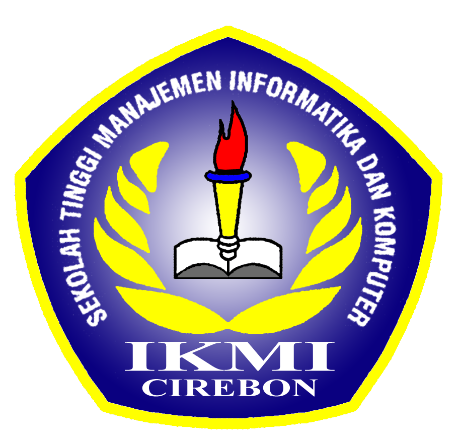

SEKOLAH TINGGI MANAJEMEN INFORMATIKA DAN KOMPUTER
STMIK
IKMI
CIREBON
Alamat Kampus :
Jl. Perjuangan No. 10B Majasem
Kec. Kesambi Kota Cirebon
Telp. (0231)-490480 - 490481
https://ikmi.ac.id
Email:
info@ikmi.ac.id
SK. MENRISTEKDIKTI NO.1/KPT/I/2015
TERAKREDITASI BAN-PT
PEMBINAAN UJIAN AKHIR SEMESTER
514a/A/STMIK-IKMI/IX/2022